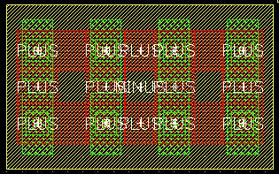

c3t_mim unit width (x) and unit length (y) properties
these layouts show the effect of varying the unit width(x) and length(y) properties for an example c3t_mim cap
unit width(x) = 2u, unit length(y) = 2u, columns in x = 2, rows in y = 2
unit width(x) = 4u, unit length(y) = 2u, columns in x = 2, rows in y = 4
unit width(x) = 2u, unit length(y) = 4u, columns in x = 4, rows in y = 2
